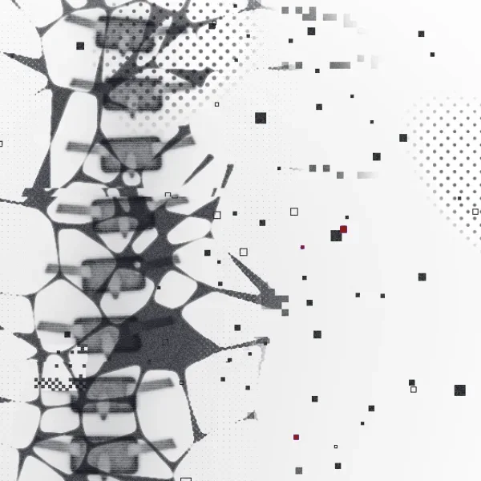
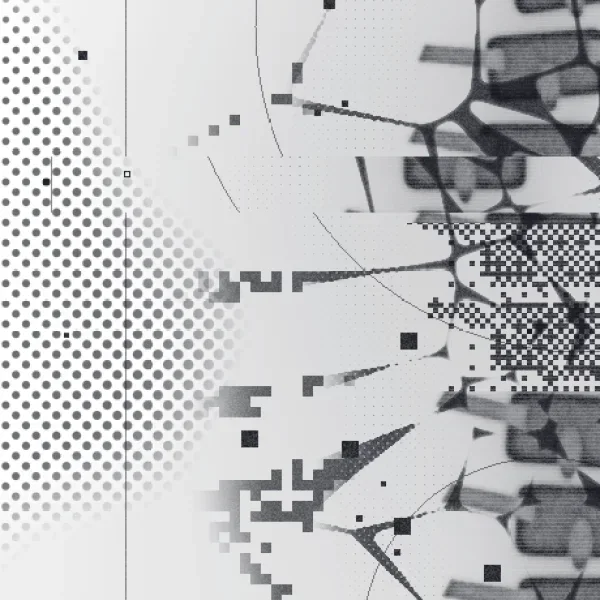
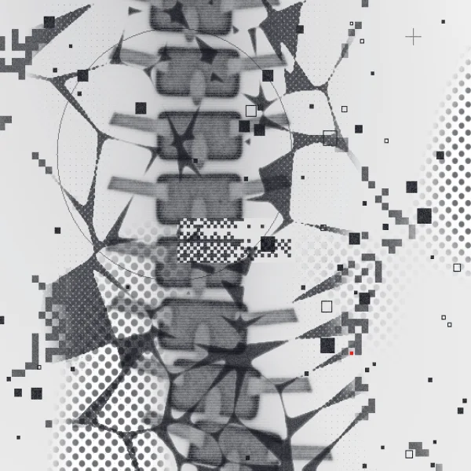

Caroline Chen, designer


Watch people.
Then build.
Caroline Chen, a designer across UX, brand, print and motion, trained in design and economics.
Open to full-time roles
Selected work
Four projects that move between screen and paper. Hover an image to bring it into color.
Every project
Lab
Motion experiments, rough on purpose. A failed experiment is safe as long as it teaches me something for the next build.
How I work
I watch how people behave in a space, not how they say they do, then find the habit a design could change.

Step 1Observe
Fieldwork in real places: notes, photos and the workarounds people make for themselves.
See

Step 2Decode
Working out why the irrational choice keeps winning. That’s where the economics comes in.
See

Step 3Build
Making it in whatever medium fits, from a Figma flow to a printed zine to a working site, starting rough.
See
Tools Figma, Adobe CC, HTML/CSS/JS, iPad, Claude, Runway, Higgsfield
About

I grew up near San Francisco wandering Chinatown, noticing how storefronts were laid out and how people moved past them. That curiosity about how people navigate physical space is what pulled me into design.
I studied Design and Managerial Economics at UC Davis, which mostly means I like figuring out why people do irrational things, on screens and off. I do fieldwork in real places, then turn what I see into interfaces, print and identity.
I sketch on an iPad, hand-code my own sites, and take bigger visual risks than I should because of hyperpop and EDM.
- Education
- UC Davis, BA Design and BS Managerial Economics
- Favorite flower
- Calla lily
- Runs on
- Absurd optimism
- Recovery mode
- Fail-safe